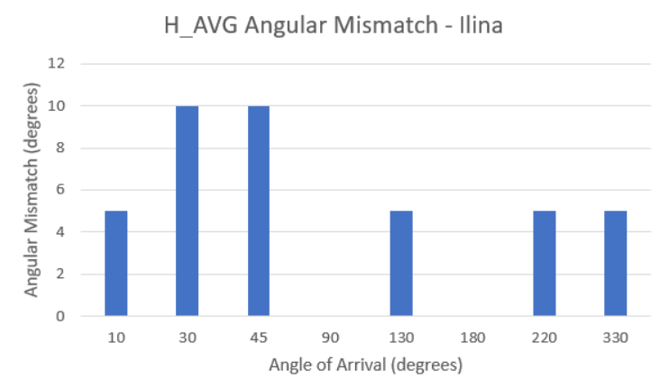
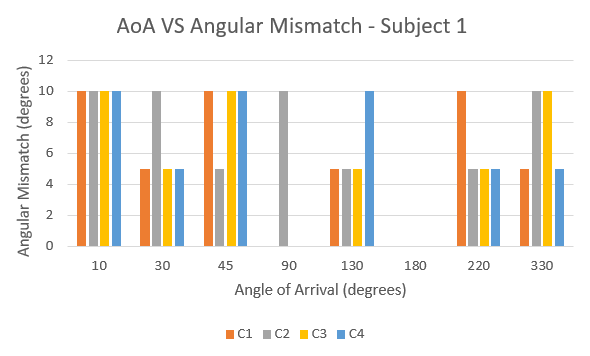
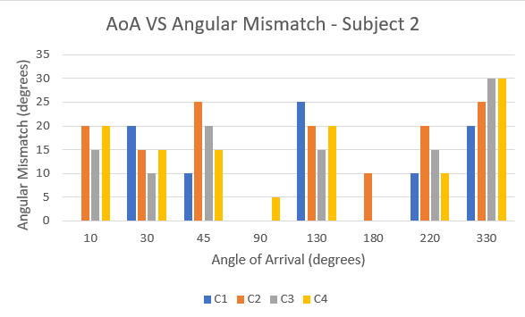

Learning Personalized Head-Related Transfer Functions from Binaural Recordings
Abstract
The project started with a simple question: if sound is recorded near both ears while a source is placed at a known angle, can the relationship between the two recordings be learned and applied to new audio?
The first recording attempt used Bluetooth earbuds, but the approach failed because onboard noise cancellation processed the signal before it could be recorded. I therefore switched to inexpensive omnidirectional lavalier microphones taped near each ear. A phone speaker was placed at controlled angles around the listener, and the two ear signals were recorded simultaneously.
The first processing pipeline aligned the recordings, divided them into short segments, and estimated a directional transfer function in the frequency domain using regularized least squares. The resulting transformation was then applied to new audio to generate a binaural signal.
The first reconstruction produced a clear spatial effect, although the perceived direction was initially flipped and later appeared to have a small angular offset. This led to a broader set of recordings and perception tests, including comparisons across different audio clips and listeners. A second approach was then developed in which individual frequency tones were recorded and used to estimate a separate time-domain filter for each frequency.
1. Problem Statement
When the same sound reaches the two ears, the listener does not receive identical signals. The head and ears modify the sound differently depending on where the source is located, and the resulting differences provide cues about its direction.
The goal of this project is to measure that left-right relationship directly and estimate a directional transformation for a fixed source angle \(\theta\). If \(x_L\) and \(x_R\) denote the two recorded signals, the basic model is:
The project then asks whether an estimated \(H_\theta\) can be applied to previously unseen audio so that a listener perceives the sound as arriving from approximately the same direction. Because the project is based on physical recordings rather than a pre-existing HRTF database, the measurements are specific to the recording setup and listener.
The practical problem is therefore not only estimating the transformation, but also determining whether the resulting spatial cue is perceptually consistent with the physical source angle.
2. Applications
The same left-right acoustic differences studied here are relevant to systems that need to make headphone audio sound as though it originates from a location in physical space.
- Headphone spatialization: directional filters can transform ordinary audio into binaural audio associated with a chosen source direction.
- Virtual reality: spatial audio can associate sounds with locations inside a simulated environment.
- Gaming: directional cues can help communicate where an event is occurring around the listener.
- Low-cost HRTF measurement: inexpensive microphones provide a way to explore personalized directional responses without relying on a large measurement facility.
3. Technical Challenges
Much of the project developed through problems encountered during the experiments rather than from a fixed procedure decided in advance.
4. Technical Approach
The project began with a simple fixed-angle recording setup. Two omnidirectional lavalier microphones were taped near the ears to approximate ear-level input. A phone speaker was placed on a tripod at a marked angle, roughly 30 cm from the listener and at ear height. The position of the listener, speaker, and microphones was kept fixed during each recording session.
The first successful recordings used broadband audio clips. The microphones took about a week to arrive after the failed earbud attempt, so the data collection was delayed slightly. The left and right signals were then recorded simultaneously, aligned during post-processing, and exported as stereo waveforms using Audacity.

4.1 From the First Recording to a Working Pipeline
The first experiment was carried out at a source angle of \(10^\circ\) to the right. After recording the two channels, I aligned them and used short audio segments for frequency-domain processing. The left signal was treated as the input and the right signal as the target, giving the relationship
The estimated transformation was then applied to new audio in chunks. The original signal was kept as the left channel, while the transformed signal was reconstructed as the right channel. This produced the first working spatialized-audio pipeline.
The first playback did not perfectly match the physical setup: the perceived direction appeared flipped. The issue was traced to the reconstruction/channel labeling stage as a likely source of error and became part of the debugging process rather than a reason to discard the approach.
4.2 Method 1: Frequency-Domain Regularized Least Squares
After the initial test, the recordings were divided into short segments and transformed into the frequency domain. For segment \(i\), the two recordings become
Rather than simply dividing \(X_R(f)\) by \(X_L(f)\), the transfer function was estimated using a regularized least-squares formulation. Across the available recordings or segments, the estimate is
The regularization term \(\lambda\) prevents the estimate from becoming unstable when the left-channel input has very little energy at a particular frequency.
I first tested the transformation using individual recordings. I then began testing whether estimating an average transfer function across multiple recordings would behave differently on previously unseen audio. To reduce the chance of unconsciously choosing a clip that sounded as expected, later perception tests used randomly selected clips.
4.3 Expanding the Angle Measurements
After the initial \(10^\circ\) experiment, I collected additional measurements at \(0^\circ\), \(10^\circ\), \(30^\circ\), \(45^\circ\), \(90^\circ\), \(100^\circ\), \(150^\circ\), \(180^\circ\), \(220^\circ\), and \(270^\circ\). This made it possible to ask whether the learned directional relationship continued to produce a roughly corresponding percept when the source was moved around the listener.
The front and back of the head were not always clearly distinguishable by listening alone. For most non-extreme measurements, the perceived direction was approximately \(10^\circ \pm 5^\circ\) away from the physical source angle. Perceived direction was estimated by having the listener point toward the apparent source and measuring the resulting angle on a marked plane. The first measurements used a measuring tape, scale, protractor, and \(10^\circ\) markings, with the head kept level with the measurement plane. A laser is being used for more precise measurements going forward.
I also began comparing perceptions across listeners rather than relying only on my own judgment. The primary experimenter is referred to as Subject 1, while the second listener is referred to as Subject 2. Because the two subjects have different individual head and ear geometries, these comparisons provide a simple test of how consistently the learned spatial cue is perceived across subjects.
4.4 Method 2: Per-Frequency Time-Domain Convolution
The next step came from asking whether the directional response should be estimated separately at each frequency. Instead of estimating one broadband transformation through the complex frequency-domain least-squares calculation, I recorded individual sinusoidal beeps from \(100\) Hz to \(16\) kHz in \(100\) Hz increments.
For each frequency \(f\), the recorded left-ear and right-ear signals are \(x_{L,f}(t)\) and \(x_{R,f}(t)\). I estimated a time-domain filter \(H_f(t)\) satisfying
The filter was estimated using cross-correlation. The correlation peak provides the relative delay between the two signals, after which a window around the peak is extracted and normalized.
For testing, a new music signal \(M(t)\) is decomposed into frequency components \(M_f(t)\). Each component is convolved with its corresponding learned filter, and the resulting signals are summed to reconstruct the right-ear signal:
The original music signal is retained as the left channel:
I am now reproducing the earlier perception experiments using this per-frequency approach and comparing them with the original least-squares method.
4.5 Processing Procedure
FIRST SETUP:
Try Bluetooth earbuds
Observe that onboard noise cancellation alters the recording
Switch to omnidirectional lavalier microphones
BROADBAND METHOD:
Place the speaker at a measured source angle
Record left and right ear signals simultaneously
Align the recordings
Segment the audio
Compute FFTs
Estimate H_theta(f) with regularized least squares
Apply the learned transformation to new audio
Reconstruct binaural playback
EXPERIMENTAL FOLLOW-UP:
Collect additional source angles
Test unseen audio clips
Randomize clip selection during perception tests
Compare repeated self-perception
Compare perception across listeners
Measure physical versus perceived angle
PER-FREQUENCY METHOD:
Record individual tones every 100 Hz from 100 Hz to 16 kHz
Estimate H_f(t) for each frequency
Use cross-correlation to locate the response
Extract and normalize the filter
Decompose new music into frequency components
Convolve each component with its corresponding H_f(t)
Sum the reconstructed components
Use the original signal as the left channel
OUTPUT:
Stereo spatialized audio
5. Experiment Design, Results, and Demos
5.1 Experiment Design
The physical setup was kept fixed during each recording session. Two omnidirectional lavalier microphones were taped near the ears. A phone speaker was placed on a tripod at the selected source angle, approximately one foot from the listener and at ear height. The listener's seating position and head position were kept fixed while recordings were collected.
The first broadband experiment used a source at \(10^\circ\). After the initial pipeline worked, additional broadband data were collected at \(0^\circ\), \(10^\circ\), \(30^\circ\), \(45^\circ\), \(90^\circ\), \(100^\circ\), \(150^\circ\), \(180^\circ\), \(220^\circ\), and \(270^\circ\).
For the least-squares experiments, several audio clips were recorded at the same source conditions. The resulting transfer functions were tested on randomly selected clips so that the evaluation did not depend on choosing an audio clip that already sounded like the expected direction. I compared individual-clip estimates with an averaged estimate across multiple clips, and also began testing whether another listener perceived the same general direction.
For the per-frequency experiments, individual sinusoidal tones were recorded from \(100\) Hz through \(16\) kHz in \(100\) Hz increments. These measurements were collected for \(0^\circ\), \(30^\circ\), \(60^\circ\), \(90^\circ\), \(120^\circ\), \(180^\circ\), and \(220^\circ\), after which the resulting \(H_f(t)\) filters were used to reconstruct the right channel of a new music signal.
5.2 Results and Observations



The first successful reconstruction produced a spatial effect when played over headphones, showing that the recorded left-right relationship contained usable directional information. The first playback appeared flipped relative to the physical setup, which led to debugging of the reconstruction and channel labeling.
After expanding the measurements, the perceived direction was generally close to the recorded direction for the less ambiguous positions. My current measurement gives an angular mismatch of approximately \(10^\circ \pm 5^\circ\), excluding the more difficult extreme regions around the front and back. In particular, sounds from the front and back were not always clearly distinguishable by listening alone.
These observations motivated a more systematic perception test. Rather than relying only on my own judgment, the same spatialized clips can be evaluated by multiple listeners, with perceived direction recorded by pointing and compared against the physical source angle.
5.3 Comparing the Two Methods
The current comparison is between the original frequency-domain regularized least-squares method and the newer per-frequency time-domain convolution method. The perception graph set includes Subject 1–Subject 1 without averaging, Subject 1–Subject 1 with an averaged transfer function, and Subject 1–Subject 2 without averaging, with randomly selected clips used where applicable. The least-squares pipeline uses broadband recordings and estimates a frequency-domain transfer function from the recorded data. The newer method instead measures individual frequencies directly and constructs a separate time-domain response for each frequency.
The same style of perception graphs is being reproduced for the per-frequency method so that the two approaches can be compared using the same experimental procedure.
5.4 Demos
The audio examples below are recordings generated during the project. Additional TouchDesigner visualizations can be added here to show the source angle, left-right recordings, learned transfer functions, and frequency-by-frequency reconstruction without presenting synthetic experimental results as measured data.